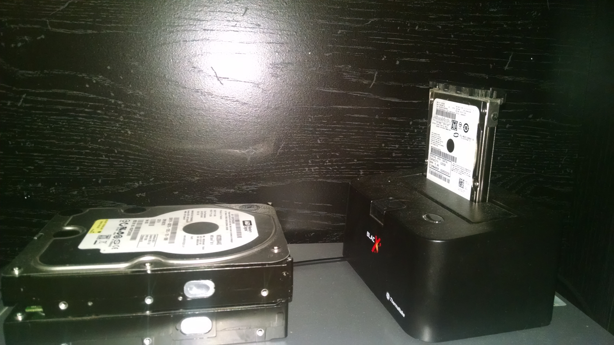
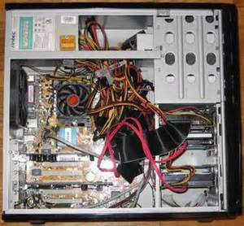
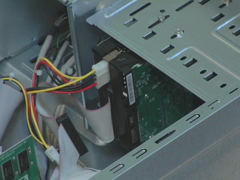

1. Needed. You will need to identify what harddrive and connectors your computer is using, either Sata or IDE. You can find this information in your computer's manual.Once you've identified your harddrive you will need to buy the drive you would like to replace.
2. Backup. It is great practice to always backup your computer whenever you plan to make any major changes. I tipically use one of my extra harddrives in my external harddrive hub when I backup the data on my PC. However, there are many different ways to backup your computer.You can find out more here: http://www.wikihow.com/Back-up-a-Computer
3. Open your Case. Before opening my desktops's case, I first unplug its power cord and cycle the power button Precausions must always be taken when working inside of a computer. To open my computer case I must first untwist a few screws then I can slide the covering off of the case. SO as not to damage any electrical component within your case, it is always recommended that you uses an anti-electrostatic wrist wrap or ground your self to the PC with occasion touches to the case's frame or power supply.
4. Remove & replace. To remove my harddrive I first unplugged the connecters and then unscrewed a few fasteners theat held it in place. Once out, you can replace your old harddrive with the new one.
Home Page | How to Change my Laptop Screen | How to Fry Plantains